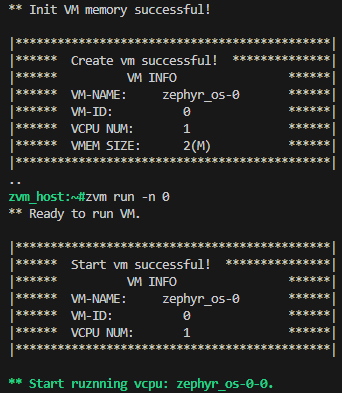
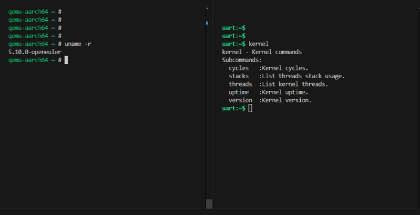

嵌入式实时虚拟机ZVM¶
总体介绍¶
ZVM（Zephyr-based Virtual Machine）是基于开源微内核实时操作系统 Zephyr RTOS（由Linux基金会托管） 开发的一款 虚拟机管理器（Hypervisor），能在单一硬件平台上启动多个操作系统，以构建安全隔离的多内核混合部署系统。
目前以终端控制方式加入openEuler-mcs特性
ZVM 构建指导¶
使用 oebuild 构建¶
目前提供预编译zvm和zephyr镜像,支持在 qemu-aarch64 上运行 zvm，可同时部署Zephyr RTOS和openEuler
预编译Image已经集成到openeuler-image-mcs构建过程中，由bitbake构建过程中自动加载到相应的目录
openEuler和对应的dtb、根文件系统则由bitbake在构建过程中进行编译和生成。
Note
zvm启动的两个OS的虚拟终端通过screen连接，为qemu增加的uart补丁也已经包含在构建过程中
根据 mcs镜像构建指导，使用 oebuild 初始化编译环境。
进入oebuild工作目录，创建编译配置文件
compile.yaml:# 使用qemu-aarch64平台、包含mcs和zvm特性、此处构建目录名为zvm oebuild generate -p qemu-aarch64 -f openeuler-mcs -f zvm -d zvm进入
build_zvm目录使用oebuild容器构建:oebuild bitbake # 进入容器后 bitbake openeuler-image-mcs最终启动依赖的文件位于
build/zvm/tmp/deploy/images/qemu-aarch64:
zvm_host.elf
zephyr.bin
zvm-openeuler-Image
zvm-openeuler.cpio.gz
zvm-openeuler.dtb
ZVM 使用指导¶
构建完成后使用qemu启动:
Note
构建过程中自动编译了带有补丁的qemu，位于:
./tmp/work/x86_64-linux/qemu-helper-native/1.0-r1/recipe-sysroot-native/usr/bin/qemu-system-aarch64
$ qemu-system-aarch64 -machine virt,gic-version=3 -machine virtualization=true -cpu max -smp 4 -m 4096 \ -chardev stdio,id=con,mux=on -mon chardev=con,mode=readline -serial chardev:con \ -serial pty -serial pty -nographic -net none -pidfile qemu.pid \ -device loader,file=/home/openeuler/build/zvm/tmp/deploy/images/qemu-aarch64/zephyr.bin,addr=0xc8000000,force-raw=on \ -device loader,file=/home/openeuler/build/zvm/tmp/deploy/images/qemu-aarch64/zvm-openeuler-Image,addr=0xe0000000,force-raw=on \ -device loader,file=/home/openeuler/build/zvm/tmp/deploy/images/qemu-aarch64/zvm-openeuler.cpio.gz,addr=0xe4000000,force-raw=on \ -device loader,file=/home/openeuler/build/zvm/tmp/deploy/images/qemu-aarch64/zvm-openeuler.dtb,addr=0xf2a00000 \ -kernel /home/openeuler/build/zvm/tmp/deploy/images/qemu-aarch64/zvm_host.elfNote
支持通过runqemu脚本启动，但会默认为启动过程追加一些目前不需要的配置
runqemu 脚本启动
修改内容为
src/yocto-poky/scripts/runqemu:1418:self.qemu_opt += ""#" -serial mon:stdio"因为启动ZVM使用的配置是:
-chardev stdio,id=con,mux=on -mon chardev=con,mode=readline -serial chardev:con这与-serial mon:stdio冲突
连接虚拟终端
查看zvm终端输出信息，如:
char device redirected to /dev/pts/2 (label serial1) char device redirected to /dev/pts/3 (label serial2)# 在同构建目录下，另外启动进入两个oebuild 容器，分别使用screen连接 $ screen /dev/pts/2 $ screen /dev/pts/3启动Zephyr虚拟机
zvm_host:~# zvm new -t zephyr zvm_host:~# zvm run -n 0如下图所示:
启动Linux虚拟机
zvm_host:~# zvm new -t linux zvm_host:~# zvm run -n 1最终连接到2个虚拟机如下图所示:
